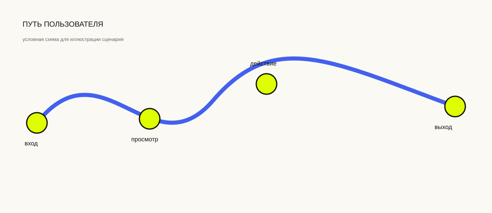

Длинная форма — не обязательно плохая. Проблема начинается там, где пользователь перестаёт понимать, зачем от него требуют данные, что произойдёт дальше и как исправить ошибку.
01. Форма — это обмен, а не список полей
Когда сервис просит имя, телефон, адрес или паспортные данные, пользователь каждый раз принимает маленькое решение: продолжать ли обмен. Цена действия складывается не только из количества полей. На неё влияют доверие, понятность цели и ощущение контроля. Поэтому две формы одинаковой длины могут восприниматься совершенно по-разному.

02. Пять точек трения
Первая — слишком ранний запрос чувствительных данных. Вторая — непонятный формат поля. Третья — ошибка без объяснения. Четвёртая — потеря введённых данных после ошибки. Пятая — отсутствие понимания, сколько ещё осталось. Каждая из них увеличивает вероятность выхода, а вместе они формируют ощущение «слишком сложно».
03. Что измерять
Минимальный набор событий может включать начало заполнения, переход между шагами, появление ошибки и успешную отправку. Если форма многошаговая, конверсию стоит считать отдельно для каждого перехода. Так видно не просто общий процент отказов, а конкретную точку, где сценарий ломается.
04. Гипотеза для проверки
Если проблема сосредоточена в одном поле, сначала стоит изменить именно его: пояснить формат, убрать необязательный запрос или сделать ошибку понятнее. После изменения сравнивается доля пользователей, дошедших до следующего шага. Это маленький эксперимент, но он уже связывает UX-решение с наблюдаемым поведением.